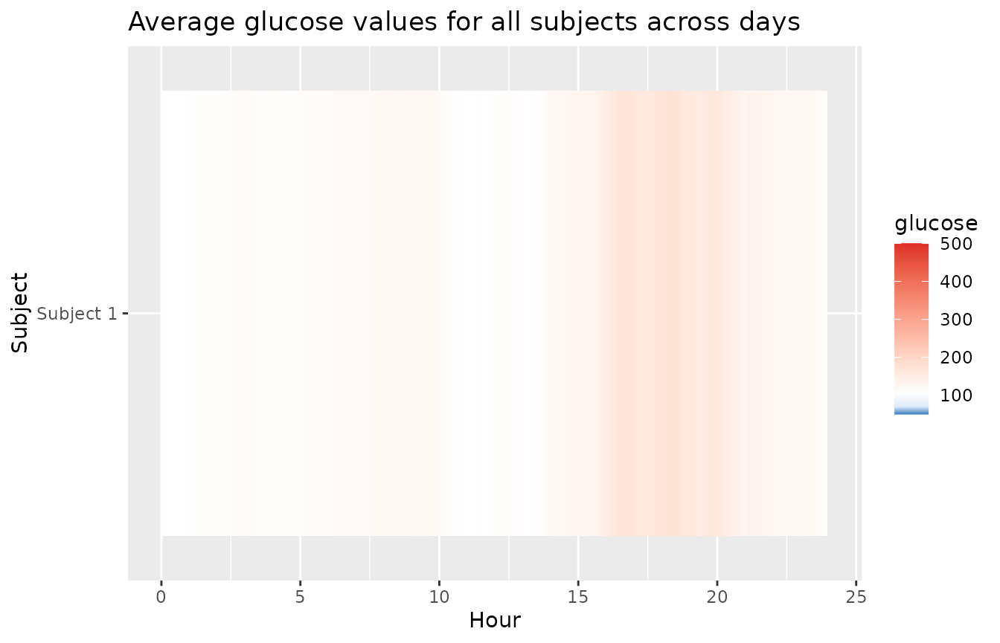

Lasagna Plots
lasagna_plots.RmdLasagna plots
The plot_glu function also supports lasagna plots by changing the ‘plottype’ parameter. For more on lasagna plots, see Swihart et al. (2010) “Lasagna Plots: A Saucy Alternative to Spaghetti Plots.”
plot_glu(example_data_5_subject, plottype = 'lasagna', tz = 'EST')

By default, this will produce an unsorted lasagna plot using up to 14 days worth of data displayed separately. To average across days at each time point, we can use datatype = 'average':
plot_glu(example_data_5_subject, plottype = 'lasagna', datatype = 'average', tz = 'EST')

We can additionally sort the values at each time point across the five subjects by setting lasagnatype = 'timesorted'
plot_glu(example_data_5_subject, plottype = 'lasagna', datatype = 'average', lasagnatype = 'timesorted', tz = 'EST')

When working with a single subject, setting datatype = single will produce plots where rows represent days instead of subjects.
plot_glu(example_data_1_subject, plottype = 'lasagna', datatype = 'single', lasagnatype = 'unsorted', tz = 'EST')

plot_glu(example_data_1_subject, plottype = 'lasagna', datatype = 'single', lasagnatype = 'timesorted', tz = 'EST')

For further customization of lasagna plots, use the plot_lasagna and plot_lasagna_1subject functions.
plot_lasagna allows for multi-subject lasagna plots with the additional options of sorting the hours by glucose values for each subject, i.e. horizontal sorting, by setting lasagnatype = 'subjectsorted'.
plot_lasagna(example_data_5_subject, datatype = 'average', lasagnatype = 'subjectsorted', tz = 'EST')

plot_lasagna also supports changing the maximum number of days to display, as well as the upper and lower target range limits (LLTR and ULTR), midpoint, and minimum and maximum values to display, all of which will affect the colorbar.
plot_lasagna(example_data_5_subject, datatype = 'average', lasagnatype = 'subjectsorted', LLTR = 100, ULTR = 180, midpoint = 150, limits = c(80, 500), tz = 'EST')
plot_lasagna_1subject allows for customization of the more detailed single subject lasagna plots. There is no datatype parameter for plot_lasagna_1subject, but there are three types of plots available, accessed with the lasagnatype parameter.
plot_lasagna_1subject(example_data_1_subject, lasagnatype = 'unsorted', tz = 'EST')

plot_lasagna_1subject(example_data_1_subject, lasagnatype = 'timesorted', tz = 'EST')

plot_lasagna_1subject(example_data_1_subject, lasagnatype = 'daysorted', tz = 'EST')

As with the lasagna_plot function, changing the LLTR, ULTR, midpoint, and limits parameters will affect the colorbar.
plot_lasagna_1subject(example_data_1_subject, lasagnatype = 'daysorted', midpoint = 150, limits = c(80,500), tz = 'EST')